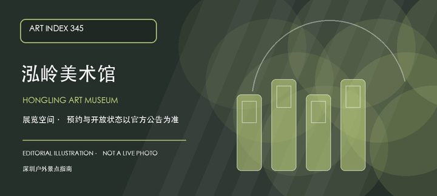

适合谁
适合长者、亲子、城市观察和一小时以内短停；追求安静时应避开晨晚活动高峰。

SHENZHEN GUIDE · 008
红岭 · 老公园
荔枝公园位于红岭老城区，荔枝林、湖面与老城区公共生活贴得很近，邓小平画像广场周边的城市记忆使它比普通社区公园更具时代切片感。游览重点是荔枝林与老树荫与湖岸曲桥如何组织城市公共生活，可按同行者体力随时缩短。先确认最想看的节点，再把树荫、休息点、活动占用和雨天退出位置纳入路线。
WHY GO
适合长者、亲子、城市观察和一小时以内短停；追求安静时应避开晨晚活动高峰。
从红岭或大剧院片区进入，沿湖走半圈并穿过荔枝林，再按噪声和天气决定是否停留。
公共交通先到红岭老城区片区，再以荔枝公园公开参观入口为终点；多入口地点须按计划游线选择入口，并预先锁定返程站点。
导航至荔枝公园官方开放入口配套或邻近正规公共停车场；周末满位即改乘公共交通，不在绿道口、村道或消防通道临停。
10 月至次年 4 月最舒适；夏季选择清晨或傍晚，雷雨、高温预警时缩短路线或转入室内。
NEARBY IDEAS

编辑配图·非现场实景泓岭美术馆位于红岭中路银荔大厦九楼901，属于需要通过楼宇地址和开放公告确认入口的城市艺术空间。它适合与福田中心区的公共文化路线组合，但不应因为位于写字楼就假定全天候开放。
 授权实景图
授权实景图
深圳博物馆古代艺术馆位于同心路，以中国古代艺术专题、馆藏器物与不定期特展为核心，建筑和展陈气质都区别于市民中心的历史民俗馆。
 授权实景图
授权实景图
深圳市科学馆位于上步中路，老牌科普场馆承载几代市民的科学教育记忆，展项规模和更新节奏不同于光明新馆，更适合结合当天活动选择性参观。